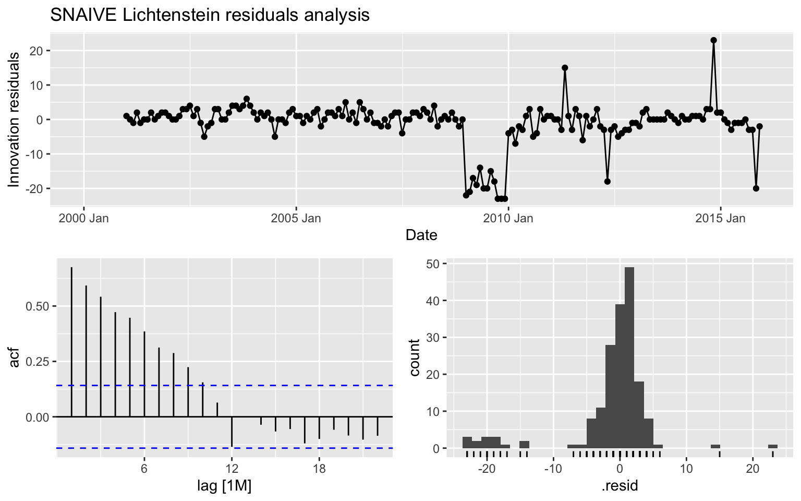

Forecasting Project 1 - Group 7
Data cleaning
We import data and we clean it from NA and from blank rows. We also name the columns. Here is a sample of our data:
## date germany france italy austria lichtenstein total
## 1 January 2000 421 313 1760 3 24 2521
## 2 February 2000 412 141 1757 4 23 2337
## 3 March 2000 459 148 1962 4 23 2596
## 4 April 2000 474 114 1767 3 17 2375
## 5 May 2000 935 116 1927 42 14 3034
## 6 June 2000 910 101 1895 31 13 2950Data import
We directly import the data from the excel file, selecting only the range that contains the data, and then setting the column names accordingly.
#importing data directly from excel
data_elec <- read_excel("data/Electricity export Switzerland.xlsx",
range = "A6:G280", col_names = FALSE)## New names:
## • `` -> `...1`
## • `` -> `...2`
## • `` -> `...3`
## • `` -> `...4`
## • `` -> `...5`
## • `` -> `...6`
## • `` -> `...7`#Setting column names
colnames(data_elec) = c('Date','Germany','France','Italy','Austria','Lichtenstein','Total')Data cleaning
Looking at the data we see that October is written with a “k”, so we change that in the Date column. Then we check for missing values, before proceeding.
# replace "Oktober" with "October" in the Date column
data_elec$Date <- str_replace_all(data_elec$Date, "Oktober", "October")
#This uses the "DataExplorer" package
plot_intro(data_elec)
Converting to tsibble so that we can use the fpp3 and tsibble package functions
#Convert to tsibble
data_elec <- data_elec %>%
mutate(Date = yearmonth(Date)) %>% #need to do this before converting to get proper format
as_tsibble(index = Date)
#check that it's a tsibble now, and we can see it recognized the data is monthly because of the [1M]
is_tsibble(data_elec)## [1] TRUEdata_elec## # A tsibble: 275 x 7 [1M]
## Date Germany France Italy Austria Lichtenstein Total
## <mth> <dbl> <dbl> <dbl> <dbl> <dbl> <dbl>
## 1 2000 січ 421 313 1760 3 24 2521
## 2 2000 лют 412 141 1757 4 23 2337
## 3 2000 бер 459 148 1962 4 23 2596
## 4 2000 кві 474 114 1767 3 17 2375
## 5 2000 тра 935 116 1927 42 14 3034
## 6 2000 чер 910 101 1895 31 13 2950
## 7 2000 лип 510 105 1950 16 14 2595
## 8 2000 сер 612 152 1275 39 14 2092
## 9 2000 вер 354 320 1849 18 17 2558
## 10 2000 жов 439 291 2295 28 20 3073
## # … with 265 more rowsTHINGS THAT NEED TO BE DONE
In general:
- Select what will go in the final report
- Complete the Report
- Create table with final forecasts (DONE) + Confidence intervals (DONE)
- Add lichtenstein forecast table + inside the final_fc
Country specific:
- Explore huge peak in Austria 2002 -> is it an outlier
- Explain big drop in Lichtenstein + thought process behind piece-wise model
1. Introduction
This project is a forecasting analysis for the electricity exports from Switzerland to several European countries. The data used was all provided by the professor and no additional datasets were used. We have selected the models that fit each country the best (based on some performance metrics) and have created forecasts and CI’s for each country as well as the total. In the final report you are now reading, only the most important information is included, and whatever was deemed unnecessary for the report you can find in our code files.
The forecasting models used in this project are S-Naive, S-ARIMA, ETS and a variant of TSLM (piece-wise) for a specific country.
2. Data Processing
The data we were given was already cleaned, without any missing values. The only noteworthy cleaning we did, was to format the names of all columns and all rows, and to then convert the final table to a tsibble in order to be able to use functions from the tsibble and fpp3 package. All details on how this was done can be found in the code files.
3. Exploratory Data Analysis
3.1 Historical data plots
In this section you can find an example of the exploratory analysis we did to identify outliers and behaviors in our data. We created historical plots of all the data for each country, but this is not presented here and can instead be found in our code files (eda.rmd). The anomalies and outliers in the behaviors of exports for each country, helped guide the rest of our analysis.
For example, we noticed irregularities in the amplitudes of seasonality over time. For countries like Germany and France, the amplitude of the seasonality seems to increase towards the most recent years. Based on this, we decided to do a seasonal/trend decomposition for each country to further analyze this.
Furthermore, for Lichtenstein, we noticed a huge drop in exports after 2008-2009, which indicated that we should try different models like the piece-wise model to seperate the differences in trend over time.
3.2 Seasonal Sub-series plots
We also created seasonal sub-series plots to explore specific months in more detail, for each country. Below you can see the one for the total exports:
data_elec %>% gg_subseries(Total) +
ylab("GWt") + xlab("Month") +
ggtitle("Seasonal subseries plot: Swiss electricity exported to All countries")
Here are some observations based on these plots for each country (which you can find in eda.rmd):
- Germany: It looks like Germany consistently receives more electricity during the summer months (May, June, July, August). Seasonality seems to vary over time, increasing towards the most recent years.
- France: It looks like there are two peaks in energy exported to
France during the year, one in July, and one in December.
- Italy: Similar energy peak in July.
- Austria: Same trend, with a single peak in the summer months, and then relatively constant energy for the other months.
- Lichtenstein: This country shows the opposite trend, with a very
smooth peak in the coldest winter months (Jan,Feb), and the lowest
energy exports during the summer months.
- Total: Clearly seeing the peak in energy exports to countries in the summer, and specifically in July. The other months are at similar levels for the total electricity exports.
In summary, the main observation we got from these historical plots, was that all countries (except Lichtenstein) experience peaks in the electricity they receive from Switzerland in the summer months.
Before this monthly analysis, we expected that energy exports to these countries, would be higher in the winter months, as that’s when people tend to consumer more energy to heat up their homes (we assumed this to be one of the biggest drivers in energy consumption). However, in reality it seems like electricity exports are peaking in the summer and not in the winter months. Our explanation for this is that the ways to heat up a home in the winter are mainly based on oil/gas rather than electricity which is why there is no peak for electricity exports in the winter. On the contrary, during the summer months, people tend to cool down their homes using Air-conditioning which primarily uses electricity, hence the peak in the summer months. This does not explain why Lichtenstein does not follow the same pattern, despite being geographically right next to all of these countries (hence having similar climate).
3.3 ACF - Autocorrelation analysis
Before moving on with the models and in order to be able to use them, we wanted to check for autocorrelation in the time series. Here is data on Germany which is lagged by 12 periods:
#Graph of 12 lagged months for Germany
data_elec %>%
gg_lag(Germany, lags = 1:12, geom="point") +
ggtitle("Germany 12-period lag graph")
From this graph, we can visualize autocorrelation. It’s clear that the autocorrelation is the highest for the 1-month lag, and the 12-month lag. We can see this because the points in the scatterplots (Current month vs Lagged period x) approach the 45-degree line, indicating the similarity in magnitude of two the observations.
Based on the strong and clear presence of autocorrelation, we expect that a model like ARIMA/SARIMA will do a good job to capture this auto-correlation component, and will most likely have the best performance compared to other models. On the contrary, auto-correlation tends to impact the performance of SNAIVE models, as they rely on the assumption that the future values are solely determined by past values without considering any auto-correlation patterns. This suggests that our SNAIVE model will not be fitting the data as well.
3.4 Decomposition
In the final part of our EDA, we decided to perform an STL decomposition, as it can provide valuable insights and help explore and understand any strange patterns in our data. Overall, we observed strong seasonality and trend patterns in each country and all countries together which suggested our models should have a way to capture their presence.
Here’s the STL decomposition for Germany:
data_elec %>%
model(STL(Germany ~ trend(window = 7) + season(window = "periodic"),
robust = TRUE)) %>%
components() %>%
autoplot()
Decomposition
As time series data often consists of different patterns, it is helpful to split time series into components, each representing a pattern category. As a result, we can understand how each element behaves over time and model each separately for greater forecasting accuracy results. It will also help to decide on the type of forecasting model.
For this purpose, we considered different types of decomposition techniques (see Appendix 1.) such us Classical Decomposition, STL Decomposition, and X-11 method. We decided to continue with the second one.
STL Decomposition is a versatile and robust method that handles any seasonality; seasonal components can change, and smoothness can be controlled.
We observe strong seasonality and trend patterns in each country and all countries together. The data is non-stationary.
STL Decomposition for all countries
Germany
data_elec %>%
model(STL(Germany ~ trend(window = 7) + season(window = "periodic"),
robust = TRUE)) %>%
components() %>%
autoplot()
France
#STL Decomposition_France
data_elec %>%
model(STL(France ~ trend(window = 7) + season(window = "periodic"),
robust = TRUE)) %>%
components() %>%
autoplot()
Italy
data_elec %>%
model(STL(Italy ~ trend(window = 7) + season(window = "periodic"),
robust = TRUE)) %>%
components() %>%
autoplot()
Austria
data_elec %>%
model(STL(Austria ~ trend(window = 7) + season(window = "periodic"),
robust = TRUE)) %>%
components() %>%
autoplot()
Lichtenstein
data_elec %>%
model(STL(Lichtenstein ~ trend(window = 7) + season(window = "periodic"),
robust = TRUE)) %>%
components() %>%
autoplot()
Total
data_elec %>%
model(STL(Total ~ trend(window = 7) + season(window = "periodic"),
robust = TRUE)) %>%
components() %>%
autoplot()
Model Selection
Methodology
To evaluate the forecast accuracy, we will test how a model performs on new data not used during the fitting phase. We split our data into training and test set. The first one we will use to estimate any parameters of the forecasting method, and the second - is to define the model’s accuracy. We fit the training data to models selected (ARIMA, ETS, SNAIVE) to forecast 60 following periods (in our case, months). We refit our models with test data and calculate the accuracy of the forecast. We select the model with the lowest accuracy metrics for further forecast. Low metric values indicate the better predictive performance of the model, with a value of 0 indicating a perfect fit between the predicted and actual values. Residuals analysis is also going to be plotted to see how well the model captures the dynamics of the data. Good models’ residuals should be stationary (white noise) and have no patterns.
We can see strong seasonality and trend in data from our decomposition analysis, so we tested ARIMA, ETS, and Seasonal NAIVE models as we assume these models can handle these types of data the best.
As the most accurate forecast is of interest, we will give more weight to the model with low values of RMSE and MAE, even though another model has a higher AIC (see Appendix 2.).
Lichtenstein Analysis will be described separately.
Germany
Germany_since_2015 <- data_elec %>%
select(Date,Germany) %>%
suppressWarnings(filter(Date >= as.Date("2015-01-01")))Testing Models
Below is the plot of how well each model fits the data based on a 60-period prediction starting from 2016.
#Split the data
training_ge <- data_elec %>% select(Date,Germany) %>% filter(Date < as.Date("2016-01-01"))## Warning: There was 1 warning in `filter()`.
## ℹ In argument: `Date < as.Date("2016-01-01")`.
## Caused by warning:
## ! Incompatible methods ("<.vctrs_vctr", "<.Date") for "<"test_ge <- data_elec %>% select(Date,Germany) %>% filter(Date >= as.Date("2016-01-01"))## Warning: There was 1 warning in `filter()`.
## ℹ In argument: `Date >= as.Date("2016-01-01")`.
## Caused by warning:
## ! Incompatible methods (">=.vctrs_vctr", ">=.Date") for ">="# Fit ARIMA model and generate forecasts
data_fit_ge_a <- training_ge %>%
model(ARIMA(Germany))
forecasts_ge_a <- data_fit_ge_a %>%
forecast(h = 60)
# Fit ETS model and generate forecasts
data_fit_ge_e <- training_ge %>%
model(ETS(Germany))
forecasts_ge_e <- data_fit_ge_e %>%
forecast(h = 60)
# Fit seasonal naive model and generate forecasts
data_fit_ge_n <- training_ge %>%
model(SNAIVE(Germany))
forecasts_ge_n <- data_fit_ge_n %>%
forecast(h = 60)
# Combine forecasts into a single data frame
all_forecasts_ge <- bind_rows(
data.frame(Date = forecasts_ge_a$Date, Method = "ARIMA", Forecast = forecasts_ge_a$.mean),
data.frame(Date = forecasts_ge_e$Date, Method = "ETS", Forecast = forecasts_ge_e$.mean),
data.frame(Date = forecasts_ge_n$Date, Method = "SNAIVE", Forecast = forecasts_ge_n$.mean))
# Plot all three sets of forecasts together
data_elec %>% autoplot(Germany) +
geom_line(data = all_forecasts_ge, aes(x = Date, y = Forecast, color = Method)) +
labs(title = "Electricity Consumption in Germany")
Measuring Model Accuracy
According to the accuracy table RMSE, MAE and other indicators, ARIMA has the lowest values on the test data. The ARIMA model has an AIC of 2422.94, AICc of 2423.39, and BIC of 2442.49. On the other hand, the ETS model has an AIC of 2975.557, AICc of 2978.110, and BIC of 3025.329. Therefore, based on these criteria, we can conclude that the ARIMA model fits the data better than the ETS model.
#Accuracy
germany_accuracy_a <-data_fit_ge_a %>%
refit(test_ge) %>%
accuracy()
germany_accuracy_e <-data_fit_ge_e %>%
refit(test_ge) %>%
accuracy()
germany_accuracy_n <-data_fit_ge_n %>%
refit(test_ge) %>%
accuracy()
germany_accuracy_table <- rbind(
data.frame(germany_accuracy_a),
data.frame(germany_accuracy_e),
data.frame(germany_accuracy_n))
#AIC
germany_accuracy_table## .model .type ME RMSE MAE MPE MAPE
## 1 ARIMA(Germany) Training 9.0270898 191.3758 120.9560 -6.177920 30.32461
## 2 ETS(Germany) Training -34.0600578 210.3173 130.9707 -9.946267 32.28047
## 3 SNAIVE(Germany) Training 0.5211268 329.2936 218.9718 -12.958205 52.08664
## MASE RMSSE ACF1
## 1 0.5523815 0.5811706 0.4239149
## 2 0.5981166 0.6386924 0.5151985
## 3 1.0000000 1.0000000 0.6538549report(data_fit_ge_a)## Series: Germany
## Model: ARIMA(1,0,1)(2,1,1)[12]
##
## Coefficients:
## ar1 ma1 sar1 sar2 sma1
## 0.7853 -0.2946 -0.8231 -0.4046 0.0965
## s.e. 0.0731 0.1106 0.1925 0.1247 0.2054
##
## sigma^2 estimated as 15296: log likelihood=-1124.06
## AIC=2260.11 AICc=2260.6 BIC=2279.27report(data_fit_ge_e)## Series: Germany
## Model: ETS(M,N,M)
## Smoothing parameters:
## alpha = 0.3739358
## gamma = 0.3451097
##
## Initial states:
## l[0] s[0] s[-1] s[-2] s[-3] s[-4] s[-5] s[-6]
## 653.4368 0.6246774 0.7255761 0.7347587 1.011001 1.387123 1.493534 1.469065
## s[-7] s[-8] s[-9] s[-10] s[-11]
## 1.560156 0.7932617 0.864902 0.6433645 0.6925801
##
## sigma^2: 0.094
##
## AIC AICc BIC
## 2797.057 2799.784 2845.919Residuals
The output below also suggests that the ARIMA model did well in capturing all the dynamics in data, as the residuals seem to be white noise.
gg_tsresiduals(data_fit_ge_a) + labs(title = "ARIMA Germany residuals analysis")
gg_tsresiduals(data_fit_ge_e) + labs(title = "ETS Germany residuals analysis")
gg_tsresiduals(data_fit_ge_n) + labs(title = "SNAIVE Germany residuals analysis")## Warning: Removed 12 rows containing missing values (`geom_line()`).## Warning: Removed 12 rows containing missing values (`geom_point()`).## Warning: Removed 12 rows containing non-finite values (`stat_bin()`).
Italy
#Selecting Italy only since 2018 to better display the forecast. 2018 will both show the trend BEFORE covid + improve display
Italy_since_2018 <- data_elec %>% select(Date,Italy) %>% filter(Date >= as.Date("2018-01-01"))## Warning: There was 1 warning in `filter()`.
## ℹ In argument: `Date >= as.Date("2018-01-01")`.
## Caused by warning:
## ! Incompatible methods (">=.vctrs_vctr", ">=.Date") for ">="Testing Models
Below is the plot of how well each model fits the data based on a 60-period prediction starting from 2016.
#Split the data
training_it <- data_elec %>% select(Date, Italy) %>% filter(Date < as.Date("2016-01-01"))## Warning: There was 1 warning in `filter()`.
## ℹ In argument: `Date < as.Date("2016-01-01")`.
## Caused by warning:
## ! Incompatible methods ("<.vctrs_vctr", "<.Date") for "<"test_it <- data_elec %>% select(Date, Italy) %>% filter(Date >= as.Date("2016-01-01"))## Warning: There was 1 warning in `filter()`.
## ℹ In argument: `Date >= as.Date("2016-01-01")`.
## Caused by warning:
## ! Incompatible methods (">=.vctrs_vctr", ">=.Date") for ">="# Fit ARIMA model and generate forecasts
data_fit_it_a <- training_it %>%
model(ARIMA(Italy))
forecasts_it_a <- data_fit_it_a %>%
forecast(h = 60)
forecasts_it_a <- data_fit_it_a %>%
forecast(h = 60)
# Fit ETS model and generate forecasts
data_fit_it_e <- training_it %>%
model(ETS(Italy))
forecasts_it_e <- data_fit_it_e %>%
forecast(h = 60)
# Fit seasonal naive model and generate forecasts
data_fit_it_n <- training_it %>%
model(SNAIVE(Italy))
forecasts_it_n <- data_fit_it_n %>%
forecast(h = 60)
# Combine forecasts into a single data frame
all_forecasts_it <- bind_rows(
data.frame(Date = forecasts_it_a$Date, Method = "ARIMA", Forecast = forecasts_it_a$.mean),
data.frame(Date = forecasts_it_e$Date, Method = "ETS", Forecast = forecasts_it_e$.mean),
data.frame(Date = forecasts_it_n$Date, Method = "SNAIVE", Forecast = forecasts_it_n$.mean))
# Plot all three sets of forecasts together
data_elec %>% autoplot(Italy) +
geom_line(data = all_forecasts_it, aes(x = Date, y = Forecast, color = Method)) +
labs(title = "Electricity Demand in Italy")
Measuring Model Accuracy
According to the accuracy table below, RMSE, MAE, and other indicators, ETS has the lowest values on the test data. However, ARIMA has lower values of AIC=2708.77, AICc=2709.1, and BIC=2725.06 than the ETS model.
#Accuracy
italy_accuracy_a <-data_fit_it_a %>%
refit(test_it) %>%
accuracy()
italy_accuracy_e <-data_fit_it_e %>%
refit(test_it) %>%
accuracy()
italy_accuracy_n <-data_fit_it_n %>%
refit(test_it) %>%
accuracy()
italy_accuracy_table <- rbind(
data.frame(italy_accuracy_a),
data.frame(italy_accuracy_e),
data.frame(italy_accuracy_n))
#AIC
report(data_fit_it_a)## Series: Italy
## Model: ARIMA(1,0,0)(2,0,0)[12] w/ mean
##
## Coefficients:
## ar1 sar1 sar2 constant
## 0.6369 0.3471 0.3479 227.4524
## s.e. 0.0565 0.0673 0.0717 16.0636
##
## sigma^2 estimated as 73103: log likelihood=-1349.39
## AIC=2708.77 AICc=2709.1 BIC=2725.06report(data_fit_it_e)## Series: Italy
## Model: ETS(A,N,A)
## Smoothing parameters:
## alpha = 0.7893584
## gamma = 0.0001000066
##
## Initial states:
## l[0] s[0] s[-1] s[-2] s[-3] s[-4] s[-5] s[-6]
## 2001.551 15.17983 90.59285 210.0609 -95.62885 -503.615 165.2749 -103.177
## s[-7] s[-8] s[-9] s[-10] s[-11]
## -101.2201 -20.17958 171.0857 59.06312 112.5631
##
## sigma^2: 71693.32
##
## AIC AICc BIC
## 3171.492 3174.219 3220.354italy_accuracy_table## .model .type ME RMSE MAE MPE MAPE
## 1 ARIMA(Italy) Training -48.053328 349.3088 284.5911 -7.772352 19.11066
## 2 ETS(Italy) Training -2.494859 311.7141 241.4607 -2.802543 14.91659
## 3 SNAIVE(Italy) Training -12.436620 554.0566 432.4366 -7.043190 28.78426
## MASE RMSSE ACF1
## 1 0.6581105 0.6304568 -0.03999788
## 2 0.5583725 0.5626034 0.03031226
## 3 1.0000000 1.0000000 0.53072915Residuals
The output below also suggests that the ARIMA model did well in capturing all the dynamics in data, as the residuals seem to be white noise.
gg_tsresiduals(data_fit_it_a) + labs(title = "ARIMA Italy residuals analysis")
gg_tsresiduals(data_fit_it_e) + labs(title = "ETS Italy residuals analysis")
gg_tsresiduals(data_fit_it_n) + labs(title = "SNAIVE Italy residuals analysis")## Warning: Removed 12 rows containing missing values (`geom_line()`).## Warning: Removed 12 rows containing missing values (`geom_point()`).## Warning: Removed 12 rows containing non-finite values (`stat_bin()`).
Austria
#Investigating Austria closely since 2018, because it seems like something changed -> perhaps should use Piecewise!!!
Austria_since_2015 <- data_elec %>% select(Date,Austria) %>% filter(Date >= as.Date("2015-01-01"))## Warning: There was 1 warning in `filter()`.
## ℹ In argument: `Date >= as.Date("2015-01-01")`.
## Caused by warning:
## ! Incompatible methods (">=.vctrs_vctr", ">=.Date") for ">="Austria_since_2018 <- data_elec %>% select(Date,Austria) %>% filter(Date >= as.Date("2018-02-01"))## Warning: There was 1 warning in `filter()`.
## ℹ In argument: `Date >= as.Date("2018-02-01")`.
## Caused by warning:
## ! Incompatible methods (">=.vctrs_vctr", ">=.Date") for ">="Testing Models
Below is the plot of how well each model fits the data based on a 60-period prediction starting from 2016.
#Split the data
training_au <- data_elec %>% select(Date, Austria) %>% filter(Date < as.Date("2016-01-01"))## Warning: There was 1 warning in `filter()`.
## ℹ In argument: `Date < as.Date("2016-01-01")`.
## Caused by warning:
## ! Incompatible methods ("<.vctrs_vctr", "<.Date") for "<"test_au <- data_elec %>% select(Date, Austria) %>% filter(Date >= as.Date("2016-01-01"))## Warning: There was 1 warning in `filter()`.
## ℹ In argument: `Date >= as.Date("2016-01-01")`.
## Caused by warning:
## ! Incompatible methods (">=.vctrs_vctr", ">=.Date") for ">="# Fit ARIMA model and generate forecasts
data_fit_au_a <- training_au %>%
model(ARIMA(Austria, stepwise = FALSE))
forecasts_au_a <- data_fit_au_a %>%
forecast(h = 60)
# Fit ETS model and generate forecasts
data_fit_au_e <- training_au %>%
model(ETS(Austria))
forecasts_au_e <- data_fit_au_e %>%
forecast(h = 60)
# Fit seasonal naive model and generate forecasts
data_fit_au_n <- training_au %>%
model(SNAIVE(Austria))
forecasts_au_n <- data_fit_au_n %>%
forecast(h = 60)
# Combine forecasts into a single data frame
all_forecasts_au <- bind_rows(
data.frame(Date = forecasts_au_a$Date, Method = "ARIMA", Forecast = forecasts_au_a$.mean),
data.frame(Date = forecasts_au_e$Date, Method = "ETS", Forecast = forecasts_au_e$.mean),
data.frame(Date = forecasts_au_n$Date, Method = "SNAIVE", Forecast = forecasts_au_n$.mean))
# Plot all three sets of forecasts together
data_elec %>% autoplot(Austria) +
geom_line(data = all_forecasts_au, aes(x = Date, y = Forecast, color = Method)) +
labs(title = "Electricity Demand in Austria")
Measuring Model Accuracy
According to the accuracy table below, RMSE, MAE, and other indicators, ETS has the lowest values on the test data. However, ARIMA has lower values of AIC=1839.24, AICc=1840.03, and BIC=1865.3 than the ETS model.
#Accuracy
austria_accuracy_a <-data_fit_au_a %>%
refit(test_au) %>%
accuracy()
austria_accuracy_e <-data_fit_au_e %>%
refit(test_au) %>%
accuracy()
austria_accuracy_n <-data_fit_au_n %>%
refit(test_au) %>%
accuracy()
austria_accuracy_table <- rbind(
data.frame(austria_accuracy_a),
data.frame(austria_accuracy_e),
data.frame(austria_accuracy_n))
#AIC
report(data_fit_au_a)## Series: Austria
## Model: ARIMA(0,0,3)(2,0,1)[12] w/ mean
##
## Coefficients:
## ma1 ma2 ma3 sar1 sar2 sma1 constant
## 0.5991 0.1591 0.1055 0.6072 0.0853 -0.3699 6.3202
## s.e. 0.0742 0.0814 0.0731 0.2940 0.1561 0.2850 2.1449
##
## sigma^2 estimated as 796.7: log likelihood=-911.62
## AIC=1839.24 AICc=1840.03 BIC=1865.3report(data_fit_au_e)## Series: Austria
## Model: ETS(A,N,A)
## Smoothing parameters:
## alpha = 0.5246043
## gamma = 0.0001000228
##
## Initial states:
## l[0] s[0] s[-1] s[-2] s[-3] s[-4] s[-5] s[-6]
## 39.20052 -12.84024 -7.616428 -8.086183 -0.9683645 43.50499 39.8389 2.189109
## s[-7] s[-8] s[-9] s[-10] s[-11]
## 0.7038562 -11.55768 -14.38028 -16.43484 -14.35283
##
## sigma^2: 895.6703
##
## AIC AICc BIC
## 2330.036 2332.764 2378.899austria_accuracy_table## .model .type ME RMSE MAE
## 1 ARIMA(Austria, stepwise = FALSE) Training 23.712075 58.28096 41.41573
## 2 ETS(Austria) Training 1.957058 49.14910 35.08150
## 3 SNAIVE(Austria) Training 10.760563 88.47408 67.54930
## MPE MAPE MASE RMSSE ACF1
## 1 -18.68018 72.22767 0.6131186 0.6587349 -0.05024102
## 2 -66.98305 101.49245 0.5193467 0.5555198 0.04964282
## 3 -57.48300 118.72629 1.0000000 1.0000000 0.50380298Residuals
The output below also suggests that the ARIMA model did well in capturing all the dynamics in data, as the residuals seem to be white noise.
gg_tsresiduals(data_fit_au_a) + labs(title = "ARIMA Austria residuals analysis")
gg_tsresiduals(data_fit_au_e) + labs(title = "ETS Austria residuals analysis")
gg_tsresiduals(data_fit_au_n) + labs(title = "SNAIVE Austria residuals analysis")## Warning: Removed 12 rows containing missing values (`geom_line()`).## Warning: Removed 12 rows containing missing values (`geom_point()`).## Warning: Removed 12 rows containing non-finite values (`stat_bin()`).
France
France_since_2015 <- data_elec %>% select(Date,France) %>% filter(Date >= as.Date("2015-01-01"))## Warning: There was 1 warning in `filter()`.
## ℹ In argument: `Date >= as.Date("2015-01-01")`.
## Caused by warning:
## ! Incompatible methods (">=.vctrs_vctr", ">=.Date") for ">="Testing Models
Below is the plot of how well each model fits the data based on a 60-period prediction starting from 2016.
#Split the data
training_fr <- data_elec %>% select(Date, France) %>% filter(Date < as.Date("2016-01-01"))## Warning: There was 1 warning in `filter()`.
## ℹ In argument: `Date < as.Date("2016-01-01")`.
## Caused by warning:
## ! Incompatible methods ("<.vctrs_vctr", "<.Date") for "<"test_fr <- data_elec %>% select(Date, France) %>% filter(Date >= as.Date("2016-01-01"))## Warning: There was 1 warning in `filter()`.
## ℹ In argument: `Date >= as.Date("2016-01-01")`.
## Caused by warning:
## ! Incompatible methods (">=.vctrs_vctr", ">=.Date") for ">="# Fit ARIMA model and generate forecasts
data_fit_fr_a <- training_fr %>%
model(ARIMA(France))
forecasts_fr_a <- data_fit_fr_a %>%
forecast(h = 60)
# Fit ETS model and generate forecasts
data_fit_fr_e <- training_fr %>%
model(ETS(France))
forecasts_fr_e <- data_fit_fr_e %>%
forecast(h = 60)
# Fit seasonal naive model and generate forecasts
data_fit_fr_n <- training_fr %>%
model(SNAIVE(France))
forecasts_fr_n <- data_fit_fr_n %>%
forecast(h = 60)
# Combine forecasts into a single data frame
all_forecasts_fr <- bind_rows(
data.frame(Date = forecasts_fr_a$Date, Method = "ARIMA", Forecast = forecasts_fr_a$.mean),
data.frame(Date = forecasts_fr_e$Date, Method = "ETS", Forecast = forecasts_fr_e$.mean),
data.frame(Date = forecasts_fr_n$Date, Method = "SNAIVE", Forecast = forecasts_fr_n$.mean))
# Plot all three sets of forecasts together
data_elec %>% autoplot(France) +
geom_line(data = all_forecasts_fr, aes(x = Date, y = Forecast, color = Method)) +
labs(title = "Electricity Demand in France")
Measuring Model Accuracy
According to the accuracy table below, RMSE, MAE, and other indicators, ETS has the lowest values on the test data. However, ARIMA has lower values of AIC = 2558.88, AICc = 2559.46, and BIC=2582.07 than the ETS model.
#Accuracy
france_accuracy_a <-data_fit_fr_a %>%
refit(test_fr) %>%
accuracy()
france_accuracy_e <-data_fit_fr_e %>%
refit(test_fr) %>%
accuracy()
france_accuracy_n <-data_fit_fr_n %>%
refit(test_fr) %>%
accuracy()
france_accuracy_table <- rbind(
data.frame(france_accuracy_a),
data.frame(france_accuracy_e),
data.frame(france_accuracy_n))
#AIC
report(data_fit_fr_a)## Series: France
## Model: ARIMA(1,1,4)(0,0,1)[12]
##
## Coefficients:
## ar1 ma1 ma2 ma3 ma4 sma1
## 0.0186 -0.4859 -0.1850 -0.0946 -0.1620 0.1771
## s.e. 0.4208 0.4161 0.2162 0.1137 0.1172 0.0764
##
## sigma^2 estimated as 15135: log likelihood=-1188.05
## AIC=2390.09 AICc=2390.7 BIC=2412.86france_accuracy_table## .model .type ME RMSE MAE MPE MAPE
## 1 ARIMA(France) Training 0.4465108 208.4824 169.0814 -30.99631 59.28774
## 2 ETS(France) Training -7.7226182 181.6390 146.1496 -30.05412 53.91812
## 3 SNAIVE(France) Training -7.8450704 273.8479 216.0141 -35.68783 76.53401
## MASE RMSSE ACF1
## 1 0.7827331 0.7613072 -0.07489327
## 2 0.6765742 0.6632845 0.14238978
## 3 1.0000000 1.0000000 0.14446626report(data_fit_fr_e)## Series: France
## Model: ETS(M,N,M)
## Smoothing parameters:
## alpha = 0.1672851
## gamma = 0.0001002813
##
## Initial states:
## l[0] s[0] s[-1] s[-2] s[-3] s[-4] s[-5] s[-6]
## 170.609 1.250038 0.9416617 1.095887 1.04379 1.14645 1.291704 0.9937027
## s[-7] s[-8] s[-9] s[-10] s[-11]
## 0.6362197 0.6065504 0.7543347 1.13727 1.102391
##
## sigma^2: 0.2439
##
## AIC AICc BIC
## 2844.032 2846.759 2892.894Residuals
The output below also suggests that the ARIMA model did well in capturing all the dynamics in data, as the residuals seem to be white noise.
gg_tsresiduals(data_fit_fr_a) + labs(title = "ARIMA France residuals analysis")
gg_tsresiduals(data_fit_fr_e) + labs(title = "ETS France residuals analysis")
gg_tsresiduals(data_fit_fr_n) + labs(title = "SNAIVE France residuals analysis")## Warning: Removed 12 rows containing missing values (`geom_line()`).## Warning: Removed 12 rows containing missing values (`geom_point()`).## Warning: Removed 12 rows containing non-finite values (`stat_bin()`).
Total
Total_since_2015 <- data_elec %>% select(Date,Total) %>% filter(Date >= as.Date("2015-01-01"))## Warning: There was 1 warning in `filter()`.
## ℹ In argument: `Date >= as.Date("2015-01-01")`.
## Caused by warning:
## ! Incompatible methods (">=.vctrs_vctr", ">=.Date") for ">="Testing Models
Below is the plot of how well each model fits the data based on a 60-period prediction starting from 2016.
#Split the data
training_tot <- data_elec %>% select(Date, Total) %>% filter(Date < as.Date("2016-01-01"))## Warning: There was 1 warning in `filter()`.
## ℹ In argument: `Date < as.Date("2016-01-01")`.
## Caused by warning:
## ! Incompatible methods ("<.vctrs_vctr", "<.Date") for "<"test_tot <- data_elec %>% select(Date, Total) %>% filter(Date >= as.Date("2016-01-01"))## Warning: There was 1 warning in `filter()`.
## ℹ In argument: `Date >= as.Date("2016-01-01")`.
## Caused by warning:
## ! Incompatible methods (">=.vctrs_vctr", ">=.Date") for ">="# Fit ARIMA model and generate forecasts
data_fit_tot_a <- training_tot %>%
model(ARIMA(Total))
forecasts_tot_a <- data_fit_tot_a %>%
forecast(h = 60)
# Fit ETS model and generate forecasts
data_fit_tot_e <- training_tot %>%
model(ETS(Total))
forecasts_tot_e <- data_fit_tot_e %>%
forecast(h = 60)
# Fit seasonal naive model and generate forecasts
data_fit_tot_n <- training_tot %>%
model(SNAIVE(Total))
forecasts_tot_n <- data_fit_tot_n %>%
forecast(h = 60)
# Combine forecasts into a single data frame
all_forecasts_tot <- bind_rows(
data.frame(Date = forecasts_tot_a$Date, Method = "ARIMA", Forecast = forecasts_tot_a$.mean),
data.frame(Date = forecasts_tot_e$Date, Method = "ETS", Forecast = forecasts_tot_e$.mean),
data.frame(Date = forecasts_tot_n$Date, Method = "SNAIVE", Forecast = forecasts_tot_n$.mean))
# Plot all three sets of forecasts together
data_elec %>% autoplot(Total) +
geom_line(data = all_forecasts_tot, aes(x = Date, y = Forecast, color = Method)) +
labs(title = "Electricity Demand to all countries")
Measuring Model Accuracy
According to the accuracy table below, RMSE, MAE, and other indicators, ETS has the lowest values on the test data. However, ARIMA has lower values of AIC=2683.45, AICc=2683.9, and BIC=2702.99 than the ETS model.
#Accuracy
total_accuracy_a <-data_fit_tot_a %>%
refit(test_tot) %>%
accuracy()
total_accuracy_e <-data_fit_tot_e %>%
refit(test_tot) %>%
accuracy()
total_accuracy_n <-data_fit_tot_n %>%
refit(test_tot) %>%
accuracy()
total_accuracy_table <- rbind(
data.frame(total_accuracy_a),
data.frame(total_accuracy_e),
data.frame(total_accuracy_n))
#AIC
report(data_fit_tot_a)## Series: Total
## Model: ARIMA(1,0,1)(2,0,0)[12] w/ mean
##
## Coefficients:
## ar1 ma1 sar1 sar2 constant
## 0.7159 -0.2076 0.3750 0.3755 195.5746
## s.e. 0.0912 0.1344 0.0685 0.0708 11.2588
##
## sigma^2 estimated as 63131: log likelihood=-1335.72
## AIC=2683.45 AICc=2683.9 BIC=2702.99total_accuracy_table## .model .type ME RMSE MAE MPE MAPE
## 1 ARIMA(Total) Training -24.755873 330.0999 265.2221 -2.475478 10.561219
## 2 ETS(Total) Training -4.567152 284.6104 226.3630 -1.089216 8.842026
## 3 SNAIVE(Total) Training -9.154930 538.1098 433.9155 -2.272180 16.742385
## MASE RMSSE ACF1
## 1 0.6112298 0.6134435 -0.032412752
## 2 0.5216754 0.5289076 0.009325172
## 3 1.0000000 1.0000000 0.555685440report(data_fit_tot_e)## Series: Total
## Model: ETS(A,N,A)
## Smoothing parameters:
## alpha = 0.5690082
## gamma = 0.0002217215
##
## Initial states:
## l[0] s[0] s[-1] s[-2] s[-3] s[-4] s[-5] s[-6]
## 2735.222 -30.5261 -39.40677 146.1547 -77.94267 -290.9088 509.1663 81.12738
## s[-7] s[-8] s[-9] s[-10] s[-11]
## 83.81698 -205.6554 -47.17994 -126.659 -1.986777
##
## sigma^2: 60986.36
##
## AIC AICc BIC
## 3140.436 3143.164 3189.299Residuals
The output below also suggests that the ARIMA model did well in capturing all the dynamics in data, as the residuals seem to be white noise.
gg_tsresiduals(data_fit_tot_a) + labs(title = "ARIMA Total residuals analysis")
gg_tsresiduals(data_fit_tot_e) + labs(title = "ETS Total residuals analysis")
gg_tsresiduals(data_fit_tot_n) + labs(title = "SNAIVE Total residuals analysis")## Warning: Removed 12 rows containing missing values (`geom_line()`).## Warning: Removed 12 rows containing missing values (`geom_point()`).## Warning: Removed 12 rows containing non-finite values (`stat_bin()`).
Result
All of these metrics are important for evaluating forecast accuracy. Still, our goal is to obtain the most accurate forecast. Therefore, we give more weight to RMSE and MAE metrics than AIC. As a result, the ARIMA model is selected to forecast the electricity demand in Germany and ETS model - in Italy, Austria, France, and all countries together.
Forecast
Germany
We fit Germany electricity demand data to ARIMA model.
# Modelling ARIMA automatically
arima_germany <- data_elec %>%
select(Germany) %>%
model(arima = ARIMA(Germany))
# Forecasting using the models
forecast_arima_germany <- arima_germany %>% forecast(h = 13, level = 90) %>% hilo()Checking Residuals
The output below suggests that the ARIMA model did well in capturing all the dynamics in data, as the residuals seem to be white noise.
arima_germany %>% gg_tsresiduals(lag_max = 36) + labs(title = "SARIMA Germany residuals analysis")
Graphing the forecast
For better visualization, we plot our forecast results starting from 2015.
arima_germany %>% forecast(h = 13) %>% autoplot(Germany_since_2015) +
labs(title = "ARIMA Forecast for Germany")
#Extracting the forecasted values
forecast_table_germany_a <- data.frame(Model = c("ARIMA"),
Forecast_Values = c(forecast_arima_germany))
forecast_table_germany_a <- forecast_table_germany_a %>% select(Forecast_Values.Date,Forecast_Values..mean, Forecast_Values.80.)
forecast_table_germany_a$Country <- "Germany"
colnames(forecast_table_germany_a)[1] <- "Month"
colnames(forecast_table_germany_a)[2] <- "PF"
colnames(forecast_table_germany_a)[3] <- "CI"Forecast Table
The resulting forecast table for Germany is shown below.
forecast_table_germany_a## Month PF CI Country
## 1 2022 гру 143.2646 [ -42.377025, 328.9062]80 Germany
## 2 2023 січ 159.3608 [ -65.741236, 384.4628]80 Germany
## 3 2023 лют 135.3621 [-106.078942, 376.8031]80 Germany
## 4 2023 бер 190.7662 [ -57.988467, 439.5208]80 Germany
## 5 2023 кві 449.9413 [ 197.820354, 702.0623]80 Germany
## 6 2023 тра 731.5511 [ 477.862311, 985.2398]80 Germany
## 7 2023 чер 680.7654 [ 426.342649, 935.1882]80 Germany
## 8 2023 лип 596.8109 [ 342.043648, 851.5781]80 Germany
## 9 2023 сер 680.9398 [ 426.010721, 935.8689]80 Germany
## 10 2023 вер 379.6509 [ 124.645748, 634.6561]80 Germany
## 11 2023 жов 262.2746 [ 7.233666, 517.3155]80 Germany
## 12 2023 лис 195.0101 [ -60.047596, 450.0678]80 Germany
## 13 2023 гру 177.4056 [ -79.590548, 434.4018]80 GermanyItaly
We fit Italy electricity demand data to ETS model.
# Modelling ETS automatically
ets_italy <- data_elec %>%
select(Italy) %>%
model(ETS(Italy))
# Forecasting using the models
forecast_ets_italy <- ets_italy %>% forecast(h = 13) %>% hilo()Checking Residuals
The output below suggests that the ETS model did well in capturing all the dynamics in data, as the residuals seem to be white noise.
ets_italy %>% gg_tsresiduals(lag_max = 36) + labs(title = "ETS Italy residuals analysis")
Graphing the forecast
For better visualization, we plot our forecast results starting from 2018.
ets_italy %>% forecast(h = 13) %>% autoplot(Italy_since_2018) +
labs(title = "ETS Forecast for Italy")
#Extracting the forecasted values
forecast_table_italy_e <- data.frame(Model = c("ETS"),
Forecast_Values = c(forecast_ets_italy))
forecast_table_italy_e <- forecast_table_italy_e %>% select(Forecast_Values.Date,Forecast_Values..mean, Forecast_Values.80.)
forecast_table_italy_e$Country <- "Italy"
colnames(forecast_table_italy_e)[1] <- "Month"
colnames(forecast_table_italy_e)[2] <- "PF"
colnames(forecast_table_italy_e)[3] <- "CI"Forecast Table
The resulting forecast table for Italy is shown below.
forecast_table_italy_e## Month PF CI Country
## 1 2022 гру 1925.151 [1532.6210, 2317.681]80 Italy
## 2 2023 січ 2005.224 [1503.6805, 2506.767]80 Italy
## 3 2023 лют 2061.670 [1470.8987, 2652.442]80 Italy
## 4 2023 бер 2149.965 [1481.7755, 2818.154]80 Italy
## 5 2023 кві 1796.875 [1059.3507, 2534.400]80 Italy
## 6 2023 тра 1760.584 [ 959.7039, 2561.463]80 Italy
## 7 2023 чер 1767.861 [ 908.2827, 2627.438]80 Italy
## 8 2023 лип 2154.101 [1239.5850, 3068.617]80 Italy
## 9 2023 сер 1493.590 [ 527.2539, 2459.926]80 Italy
## 10 2023 вер 1787.870 [ 772.3551, 2803.386]80 Italy
## 11 2023 жов 2120.687 [1058.2668, 3183.107]80 Italy
## 12 2023 лис 1954.703 [ 847.3516, 3062.054]80 Italy
## 13 2023 гру 1925.151 [ 774.6323, 3075.669]80 ItalyAustria
We fit Austria electricity demand data to ETS model.
# Modelling ETS automatically
ets_austria <- data_elec %>%
select(Austria) %>%
model(ETS(Austria))
# Forecasting using the models
forecast_ets_austria <- ets_austria %>% forecast(h = 13) %>% hilo()Checking Residuals
The output below suggests that the ETS model did well in capturing all the dynamics in data, as the residuals seem to be white noise.
ets_austria %>% gg_tsresiduals(lag_max = 36) + labs(title = "ETS Austria residuals analysis")
Graphing the forecast
For better visualization, we plot our forecast results starting from 2018.
ets_austria %>% forecast(h = 13) %>% autoplot(Austria_since_2018) +
labs(title = "ETS Forecast for Austria")
#Extracting the forecasted values
forecast_table_austria_e <- data.frame(Model = c("ETS"),
Forecast_Values = c(forecast_ets_austria))
forecast_table_austria_e <- forecast_table_austria_e %>% select(Forecast_Values.Date,Forecast_Values..mean, Forecast_Values.80.)
forecast_table_austria_e$Country <- "Austria"
colnames(forecast_table_austria_e)[1] <- "Month"
colnames(forecast_table_austria_e)[2] <- "PF"
colnames(forecast_table_austria_e)[3] <- "CI"Forecast Table
The resulting forecast table for Austria is shown below.
forecast_table_austria_e## Month PF CI Country
## 1 2022 гру 109.2886 [59.75363, 158.8235]80 Austria
## 2 2023 січ 106.3760 [52.01530, 160.7368]80 Austria
## 3 2023 лют 102.6006 [43.80886, 161.3924]80 Austria
## 4 2023 бер 102.4725 [39.56102, 165.3839]80 Austria
## 5 2023 кві 111.9032 [45.12576, 178.6807]80 Austria
## 6 2023 тра 122.5810 [52.14940, 193.0126]80 Austria
## 7 2023 чер 125.5234 [51.61808, 199.4287]80 Austria
## 8 2023 лип 148.0999 [70.87697, 225.3227]80 Austria
## 9 2023 сер 147.6801 [67.27636, 228.0838]80 Austria
## 10 2023 вер 112.2665 [28.80310, 195.7299]80 Austria
## 11 2023 жов 111.3402 [24.92541, 197.7550]80 Austria
## 12 2023 лис 107.7202 [18.45029, 196.9902]80 Austria
## 13 2023 гру 109.2886 [17.25321, 201.3239]80 AustriaFrance
We fit France electricity demand data to ETS model.
# Modelling ETS automatically
ets_france <- data_elec %>%
select(France) %>%
model(ETS(France))
# Forecasting using the models
forecast_ets_france <- ets_france %>% forecast(h = 13) %>% hilo()Checking Residuals
The output below suggests that the ETS model did well in capturing all the dynamics in data, as the residuals seem to be white noise.
ets_france %>% gg_tsresiduals(lag_max = 36) + labs(title = "ETS France residuals analysis")
Graphing the forecast
For better visualization, we plot our forecast results starting from 2015.
ets_france %>% forecast(h = 13) %>% autoplot(France_since_2015) +
labs(title = "ETS Forecast for France")
#Extracting the forecasted values
forecast_table_france_e <- data.frame(Model = c("ETS"),
Forecast_Values = c(forecast_ets_france))
forecast_table_france_e <- forecast_table_france_e %>% select(Forecast_Values.Date,Forecast_Values..mean, Forecast_Values.80.)
forecast_table_france_e$Country <- "France"
colnames(forecast_table_france_e)[1] <- "Month"
colnames(forecast_table_france_e)[2] <- "PF"
colnames(forecast_table_france_e)[3] <- "CI"Forecast Table
The resulting forecast table for France is shown below.
forecast_table_france_e## Month PF CI Country
## 1 2022 гру 452.6419 [167.19710, 738.0867]80 France
## 2 2023 січ 426.1098 [154.62878, 697.5908]80 France
## 3 2023 лют 356.1703 [126.94938, 585.3911]80 France
## 4 2023 бер 268.4822 [ 93.97184, 442.9925]80 France
## 5 2023 кві 232.8623 [ 80.01875, 385.7058]80 France
## 6 2023 тра 216.6737 [ 73.08123, 360.2662]80 France
## 7 2023 чер 336.6541 [111.42498, 561.8831]80 France
## 8 2023 лип 454.1439 [147.46155, 760.8263]80 France
## 9 2023 сер 411.5258 [131.05435, 691.9973]80 France
## 10 2023 вер 389.8002 [121.71461, 657.8857]80 France
## 11 2023 жов 351.4656 [107.57262, 595.3585]80 France
## 12 2023 лис 371.7370 [111.49087, 631.9832]80 France
## 13 2023 гру 452.6433 [132.98129, 772.3054]80 FranceTotal
We fit Total electricity demand data to ETS model.
# Modelling ETS automatically
ets_total <- data_elec %>%
select(Total) %>%
model(ETS(Total))
# Forecasting using the models
forecast_ets_total <- ets_total %>% forecast(h = 13) %>% hilo()Checking Residuals
The output below suggests that the ETS model did well in capturing all the dynamics in data, as the residuals seem to be white noise.
ets_total %>% gg_tsresiduals(lag_max = 36) + labs(title = "ETS residuals analysis for all countries")
Graphing the forecast
For better visualization, we plot our forecast results starting from 2015.
ets_total %>% forecast(h = 13) %>% autoplot(Total_since_2015) +
labs(title = "ETS Forecast for All Countries")
#Extracting the forecasted values
forecast_table_total_e <- data.frame(Model = c("ETS"),
Forecast_Values = c(forecast_ets_total))
forecast_table_total_e <- forecast_table_total_e %>% select(Forecast_Values.Date,Forecast_Values..mean, Forecast_Values.80.)
forecast_table_total_e$Country <- "Total"
colnames(forecast_table_total_e)[1] <- "Month"
colnames(forecast_table_total_e)[2] <- "PF"
colnames(forecast_table_total_e)[3] <- "CI"Forecast Table
The resulting forecast table for Total is shown below.
forecast_table_total_e## Month PF CI Country
## 1 2022 гру 2444.343 [2082.422, 2806.264]80 Total
## 2 2023 січ 2466.816 [2052.994, 2880.639]80 Total
## 3 2023 лют 2401.926 [1942.023, 2861.830]80 Total
## 4 2023 бер 2468.532 [1966.762, 2970.303]80 Total
## 5 2023 кві 2253.237 [1712.834, 2793.641]80 Total
## 6 2023 тра 2529.512 [1953.059, 3105.965]80 Total
## 7 2023 чер 2569.070 [1958.692, 3179.447]80 Total
## 8 2023 лип 3080.736 [2438.224, 3723.249]80 Total
## 9 2023 сер 2344.734 [1671.618, 3017.850]80 Total
## 10 2023 вер 2375.726 [1673.339, 3078.113]80 Total
## 11 2023 жов 2586.032 [1855.546, 3316.518]80 Total
## 12 2023 лис 2425.270 [1667.717, 3182.823]80 Total
## 13 2023 гру 2444.343 [1660.667, 3228.019]80 TotalCombining all forecasts into one table:
Below is the final table containing Date, point forecast
PF, 80% lower and upper confidence levels (see Appendix 3.)
interval forecast, CI, and Country.
final_fc <- bind_rows(forecast_table_germany_a, forecast_table_italy_e, forecast_table_france_e, forecast_table_austria_e, forecast_table_total_e)
#final_fc <- final_fc %>% left_join(forecast_table_france_e, by = "Month")
#final_fc <- final_fc %>% left_join(forecast_table_italy_e, by = "Month")
#final_fc <- final_fc %>% left_join(forecast_table_austria_e, by = "Month")
#final_fc <- final_fc %>% left_join(forecast_table_Lichtenstein_a, by = "Month")
final_fc## Month PF CI Country
## 1 2022 гру 143.2646 [ -42.377025, 328.9062]80 Germany
## 2 2023 січ 159.3608 [ -65.741236, 384.4628]80 Germany
## 3 2023 лют 135.3621 [-106.078942, 376.8031]80 Germany
## 4 2023 бер 190.7662 [ -57.988467, 439.5208]80 Germany
## 5 2023 кві 449.9413 [ 197.820354, 702.0623]80 Germany
## 6 2023 тра 731.5511 [ 477.862311, 985.2398]80 Germany
## 7 2023 чер 680.7654 [ 426.342649, 935.1882]80 Germany
## 8 2023 лип 596.8109 [ 342.043648, 851.5781]80 Germany
## 9 2023 сер 680.9398 [ 426.010721, 935.8689]80 Germany
## 10 2023 вер 379.6509 [ 124.645748, 634.6561]80 Germany
## 11 2023 жов 262.2746 [ 7.233666, 517.3155]80 Germany
## 12 2023 лис 195.0101 [ -60.047596, 450.0678]80 Germany
## 13 2023 гру 177.4056 [ -79.590548, 434.4018]80 Germany
## 14 2022 гру 1925.1509 [1532.621017, 2317.6808]80 Italy
## 15 2023 січ 2005.2235 [1503.680460, 2506.7666]80 Italy
## 16 2023 лют 2061.6704 [1470.898736, 2652.4421]80 Italy
## 17 2023 бер 2149.9648 [1481.775518, 2818.1541]80 Italy
## 18 2023 кві 1796.8754 [1059.350704, 2534.4000]80 Italy
## 19 2023 тра 1760.5836 [ 959.703859, 2561.4634]80 Italy
## 20 2023 чер 1767.8605 [ 908.282652, 2627.4384]80 Italy
## 21 2023 лип 2154.1012 [1239.584993, 3068.6173]80 Italy
## 22 2023 сер 1493.5900 [ 527.253854, 2459.9262]80 Italy
## 23 2023 вер 1787.8703 [ 772.355065, 2803.3856]80 Italy
## 24 2023 жов 2120.6871 [1058.266766, 3183.1075]80 Italy
## 25 2023 лис 1954.7030 [ 847.351557, 3062.0545]80 Italy
## 26 2023 гру 1925.1509 [ 774.632327, 3075.6695]80 Italy
## 27 2022 гру 452.6419 [ 167.197098, 738.0867]80 France
## 28 2023 січ 426.1098 [ 154.628778, 697.5908]80 France
## 29 2023 лют 356.1703 [ 126.949382, 585.3911]80 France
## 30 2023 бер 268.4822 [ 93.971837, 442.9925]80 France
## 31 2023 кві 232.8623 [ 80.018754, 385.7058]80 France
## 32 2023 тра 216.6737 [ 73.081230, 360.2662]80 France
## 33 2023 чер 336.6541 [ 111.424984, 561.8831]80 France
## 34 2023 лип 454.1439 [ 147.461548, 760.8263]80 France
## 35 2023 сер 411.5258 [ 131.054347, 691.9973]80 France
## 36 2023 вер 389.8002 [ 121.714606, 657.8857]80 France
## 37 2023 жов 351.4656 [ 107.572617, 595.3585]80 France
## 38 2023 лис 371.7370 [ 111.490871, 631.9832]80 France
## 39 2023 гру 452.6433 [ 132.981289, 772.3054]80 France
## 40 2022 гру 109.2886 [ 59.753630, 158.8235]80 Austria
## 41 2023 січ 106.3760 [ 52.015301, 160.7368]80 Austria
## 42 2023 лют 102.6006 [ 43.808863, 161.3924]80 Austria
## 43 2023 бер 102.4725 [ 39.561016, 165.3839]80 Austria
## 44 2023 кві 111.9032 [ 45.125759, 178.6807]80 Austria
## 45 2023 тра 122.5810 [ 52.149396, 193.0126]80 Austria
## 46 2023 чер 125.5234 [ 51.618081, 199.4287]80 Austria
## 47 2023 лип 148.0999 [ 70.876968, 225.3227]80 Austria
## 48 2023 сер 147.6801 [ 67.276363, 228.0838]80 Austria
## 49 2023 вер 112.2665 [ 28.803098, 195.7299]80 Austria
## 50 2023 жов 111.3402 [ 24.925410, 197.7550]80 Austria
## 51 2023 лис 107.7202 [ 18.450290, 196.9902]80 Austria
## 52 2023 гру 109.2886 [ 17.253212, 201.3239]80 Austria
## 53 2022 гру 2444.3430 [2082.421872, 2806.2640]80 Total
## 54 2023 січ 2466.8163 [2052.993669, 2880.6388]80 Total
## 55 2023 лют 2401.9264 [1942.022721, 2861.8301]80 Total
## 56 2023 бер 2468.5322 [1966.761626, 2970.3027]80 Total
## 57 2023 кві 2253.2374 [1712.833909, 2793.6409]80 Total
## 58 2023 тра 2529.5121 [1953.058931, 3105.9652]80 Total
## 59 2023 чер 2569.0696 [1958.692290, 3179.4469]80 Total
## 60 2023 лип 3080.7365 [2438.223662, 3723.2493]80 Total
## 61 2023 сер 2344.7339 [1671.618062, 3017.8498]80 Total
## 62 2023 вер 2375.7261 [1673.339235, 3078.1129]80 Total
## 63 2023 жов 2586.0317 [1855.545865, 3316.5175]80 Total
## 64 2023 лис 2425.2702 [1667.717313, 3182.8230]80 Total
## 65 2023 гру 2444.3430 [1660.666608, 3228.0193]80 TotalChallenges and Further Analysis
95% CI with its wider range of values, resulted in lower than 0 electricity demand in some countries, so we chose to include 80% CI in the final tables. However, some of Germany’s lower and upper values remain negative with different confidence intervals. It may indicate that the forecasting model or method used may not adequately capture the underlying dynamics of electricity demand. Even though the model was chosen based on the accuracy analysis we conducted before. Further investigation and model testing is required.
Appendix
Appendix 1.Decomposition Comparison
- Classical Decomposition assumes seasonal component repeats from year to year, which usually is not the case in reality, over smoothes rapid rises (is not recommended to use, but still…).
- STL Decomposition is a versatile and robust method that handles any seasonality; seasonal components can change, and smoothness can be controlled.
- X-11 method originated in the US Census Bureau and was further developed by Statistics Canada, based on classical decomposition, a slightly improved version of classical decomposition; the seasonal component varies slowly over time, highly robust to outliers and level shifts in the time series.
Appendix 2. Accuracy metrics comparison
AIC criteria are used to assess the goodness of fit of a model, with lower values indicating a better fit. RMSE and MAE are used to measure the difference between predicted values and actual values. Comparatively lower numbers of these metrics assume a better model’s forecast quality potential.
Appendix 3. 80% / 95 CI Comparison
The 95% confidence interval provides a higher level of confidence but has a wider range of values. The 80% confidence interval has a lower level of confidence but a narrower range of values.